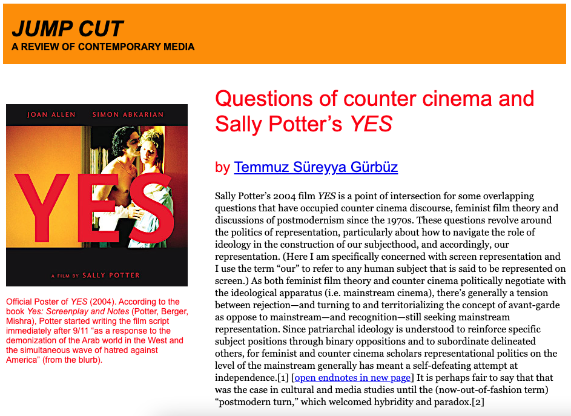

>>Gürbüz, Temmuz Süreyya. “A Non-Obituary for D. H. Peligro.” Punk and Post-Punk Journal, Vol. 12, No. 1, 2023.
DOI: 10.1386/punk_00190_7
>>Gürbüz, Temmuz Süreyya. “Questions of Counter Cinema and Sally Potter’s YES.” Jump Cut, vol. 61, 2022.

>>Gürbüz, Temmuz Süreyya. "Revisiting Early Punk Cinema.” Punk & Post-Punk Journal, Vol.10, No.1, 2021.
DOI: 10.1386/punk_00058_1
>>Gürbüz, Temmuz Süreyya. "Punk Aesthetics of Pedro Almodóvar’s Pepi, Luci, Bom: Self-reflexivity, Subcultural Formations and Queer Temporalities.” Journal of European Popular Culture, Vol.11, No.1, 2020.
DOI: (to be updated)
>>Gürbüz, Temmuz Süreyya. "Some Problems with Gendered Subjectivity and Representation: Baise Moi and Hard-Core Pornography.” CineJ Cinema Journal, Vol. 9, No. 2, 2021.